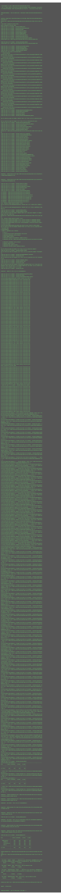

test-report for utility2 (v2017.4.14)
summary
version-
2017.4.14
test date- 2017-04-14T08:32:11.243Z
commit info-
4db1d1e878f8ce7508dc085924c3e1878046790b - [npm publish] - npm publish 2017.4.14 - begin mass test-coverage of npm-ecosystem under https://github.com/npmtest - add default testCase testCase_buildCustomOrg_default - add shell-function shIsInGithubOrg to auto-determine whether using env-var $GITHUB_ORG is appropriate or not - add shell-functions shCryptoAesWithGithubOrg, shNpmNameListFetch - auto-screenCapture test-report and coverage.html in shell-function shBuildCiInternal - improve scaffolding feature of shell-function shBuildApp - merge env-vars $npm_package_buildNpmdoc and $npm_package_readmeParse into $npm_package_buildCustomOrg - merge shell-function shBuildCustomOrg into shBuildCiInternal - preserve percent-encoding in screenCapture files (so the url can be reconstructed)
| total time-elapsed | total tests failed | total tests passed | total tests pending |
|---|---|---|---|
| 51493 ms | 0 | 268 | 0 |
1. npmTest - browser - / - Mozilla/5.0 (X11; Linux x86_64) AppleWebKit/537.36 (KHTML, like Gecko) Chrome/53.0.2785.143 Electron/1.4.15 Safari/537.36 - 2017-04-14T08:32:22.934Z

time-elapsed- 10407 ms
tests failed- 0
tests passed- 59
tests pending- 0
| # | time-elapsed | status | test-case |
|---|---|---|---|
| 1 | 1093 ms | passed | testCase_FormData_default |
| 2 | 6 ms | passed | testCase_FormData_error |
| 3 | 981 ms | passed | testCase_FormData_nullCase |
| 4 | 2 ms | passed | testCase_ajaxProgressUpdate_misc |
| 5 | 930 ms | passed | testCase_ajax_200 |
| 6 | 935 ms | passed | testCase_ajax_404 |
| 7 | 3 ms | passed | testCase_ajax_abort |
| 8 | 934 ms | passed | testCase_ajax_assets |
| 9 | 970 ms | passed | testCase_ajax_error |
| 10 | 1048 ms | passed | testCase_ajax_post |
| 11 | 1059 ms | passed | testCase_ajax_timeout |
| 12 | 3 ms | passed | testCase_assertXxx_default |
| 13 | 9 ms | passed | testCase_base64Xxx_default |
| 14 | 896 ms | passed | testCase_blobRead_default |
| 15 | 1 ms | passed | testCase_blobRead_error |
| 16 | 86 ms | passed | testCase_bufferCreate_default |
| 17 | 304 ms | passed | testCase_bufferCreate_polyfill |
| 18 | 1 ms | passed | testCase_bufferIndexOfSubBuffer_default |
| 19 | 3 ms | passed | testCase_cookieXxx_default |
| 20 | 58 ms | passed | testCase_dbTableTravisOrgUpdate_default |
| 21 | 1 ms | passed | testCase_debug_inline_default |
| 22 | 1 ms | passed | testCase_domFragmentRender_default |
| 23 | 0 ms | passed | testCase_echo_default |
| 24 | 0 ms | passed | testCase_exit_default |
| 25 | 0 ms | passed | testCase_isNullOrUndefined_default |
| 26 | 49 ms | passed | testCase_jslintAndPrintConditional_default |
| 27 | 1 ms | passed | testCase_jsonCopy_default |
| 28 | 2 ms | passed | testCase_jsonStringifyOrdered_default |
| 29 | 17 ms | passed | testCase_jwtA256GcmXxx_default |
| 30 | 3 ms | passed | testCase_jwtHs256Xxx_default |
| 31 | 2 ms | passed | testCase_listGetElementRandom_default |
| 32 | 2 ms | passed | testCase_listShuffle_default |
| 33 | 1 ms | passed | testCase_normalizeXxx_default |
| 34 | 0 ms | passed | testCase_objectGetElementFirst_default |
| 35 | 0 ms | passed | testCase_objectKeysTypeOf_default |
| 36 | 1 ms | passed | testCase_objectLiteralize_default |
| 37 | 2 ms | passed | testCase_objectSetDefault_default |
| 38 | 2 ms | passed | testCase_objectSetOverride_default |
| 39 | 1 ms | passed | testCase_objectTraverse_default |
| 40 | 1 ms | passed | testCase_onErrorDefault_default |
| 41 | 1 ms | passed | testCase_onErrorThrow_error |
| 42 | 1 ms | passed | testCase_onNext_error |
| 43 | 3022 ms | passed | testCase_onParallelList_default |
| 44 | 275 ms | passed | testCase_onParallel_default |
| 45 | 1501 ms | passed | testCase_onTimeout_timeout |
| 46 | 283 ms | passed | testCase_profileXxx_default |
| 47 | 290 ms | passed | testCase_setTimeoutOnError_default |
| 48 | 98 ms | passed | testCase_sjclHashScryptXxx_default |
| 49 | 2 ms | passed | testCase_sjclHashSha256Create_default |
| 50 | 1 ms | passed | testCase_sjclHmacSha256Create_default |
| 51 | 0 ms | passed | testCase_stringHtmlSafe_default |
| 52 | 232 ms | passed | testCase_taskCreateCached_default |
| 53 | 1 ms | passed | testCase_taskCreate_multipleCallback |
| 54 | 164 ms | passed | testCase_taskCreate_upsert |
| 55 | 2 ms | passed | testCase_templateRender_default |
| 56 | 1 ms | passed | testCase_testRunDefault_nop |
| 57 | 18 ms | passed | testCase_uglify_default |
| 58 | 2 ms | passed | testCase_urlParse_default |
| 59 | 1 ms | passed | testCase_uuid4Create_default |
2. npmTest - node - linux v6.10.2 - 2017-04-14T08:32:11.218Z

time-elapsed- 21534 ms
tests failed- 0
tests passed- 75
tests pending- 0
{kind=link}
| # | time-elapsed | status | test-case |
|---|---|---|---|
| 60 | 7078 ms | passed | testCase_FormData_default |
| 61 | 5 ms | passed | testCase_FormData_error |
| 62 | 7063 ms | passed | testCase_FormData_nullCase |
| 63 | 0 ms | passed | testCase_ajaxProgressUpdate_misc |
| 64 | 2 ms | passed | testCase_ajax_abort |
| 65 | 9603 ms | passed | testCase_ajax_assets |
| 66 | 8577 ms | passed | testCase_ajax_cache |
| 67 | 8487 ms | passed | testCase_ajax_error |
| 68 | 8560 ms | passed | testCase_ajax_post |
| 69 | 6743 ms | passed | testCase_ajax_timeout |
| 70 | 2 ms | passed | testCase_assertXxx_default |
| 71 | 4 ms | passed | testCase_base64Xxx_default |
| 72 | 2 ms | passed | testCase_blobRead_default |
| 73 | 44 ms | passed | testCase_bufferCreate_default |
| 74 | 32 ms | passed | testCase_bufferCreate_polyfill |
| 75 | 1 ms | passed | testCase_bufferIndexOfSubBuffer_default |
| 76 | 6111 ms | passed | testCase_buildApidoc_default |
| 77 | 9319 ms | passed | testCase_buildApp_default |
| 78 | 17 ms | passed | testCase_buildCustomOrg_default |
| 79 | 2 ms | passed | testCase_buildLib_default |
| 80 | 4 ms | passed | testCase_buildReadme_default |
| 81 | 4 ms | passed | testCase_buildTest_default |
| 82 | 7 ms | passed | testCase_dbTableTravisOrgUpdate_default |
| 83 | 1 ms | passed | testCase_debug_inline_default |
| 84 | 0 ms | passed | testCase_echo_default |
| 85 | 0 ms | passed | testCase_exit_default |
| 86 | 14 ms | passed | testCase_fsWriteFileWithMkdirpSync_default |
| 87 | 2182 ms | passed | testCase_httpRequest_default |
| 88 | 1 ms | passed | testCase_isNullOrUndefined_default |
| 89 | 8 ms | passed | testCase_jslintAndPrintConditional_default |
| 90 | 1 ms | passed | testCase_jsonCopy_default |
| 91 | 1 ms | passed | testCase_jsonStringifyOrdered_default |
| 92 | 14 ms | passed | testCase_jwtA256GcmXxx_default |
| 93 | 3 ms | passed | testCase_jwtHs256Xxx_default |
| 94 | 25 ms | passed | testCase_libUtility2Js_standalone |
| 95 | 2 ms | passed | testCase_listGetElementRandom_default |
| 96 | 1 ms | passed | testCase_listShuffle_default |
| 97 | 3205 ms | passed | testCase_middlewareForwardProxy_default |
| 98 | 1 ms | passed | testCase_moduleDirname_default |
| 99 | 0 ms | passed | testCase_normalizeXxx_default |
| 100 | 0 ms | passed | testCase_objectGetElementFirst_default |
| 101 | 0 ms | passed | testCase_objectKeysTypeOf_default |
| 102 | 0 ms | passed | testCase_objectLiteralize_default |
| 103 | 2 ms | passed | testCase_objectSetDefault_default |
| 104 | 2 ms | passed | testCase_objectSetOverride_default |
| 105 | 1 ms | passed | testCase_objectTraverse_default |
| 106 | 1 ms | passed | testCase_onErrorDefault_default |
| 107 | 1 ms | passed | testCase_onErrorThrow_error |
| 108 | 2096 ms | passed | testCase_onFileModifiedRestart_watchFile |
| 109 | 1 ms | passed | testCase_onNext_error |
| 110 | 4356 ms | passed | testCase_onParallelList_default |
| 111 | 368 ms | passed | testCase_onParallel_default |
| 112 | 2088 ms | passed | testCase_onTimeout_timeout |
| 113 | 3211 ms | passed | testCase_processSpawnWithTimeout_default |
| 114 | 336 ms | passed | testCase_profileXxx_default |
| 115 | 6 ms | passed | testCase_replStart_default |
| 116 | 2073 ms | passed | testCase_replStart_tcp |
| 117 | 2 ms | passed | testCase_requireExampleJsFromReadme_start |
| 118 | 1 ms | passed | testCase_serverRespondTimeoutDefault_default |
| 119 | 321 ms | passed | testCase_setTimeoutOnError_default |
| 120 | 76 ms | passed | testCase_sjclHashScryptXxx_default |
| 121 | 2 ms | passed | testCase_sjclHashSha256Create_default |
| 122 | 1 ms | passed | testCase_sjclHmacSha256Create_default |
| 123 | 1 ms | passed | testCase_stringHtmlSafe_default |
| 124 | 246 ms | passed | testCase_taskCreateCached_default |
| 125 | 1 ms | passed | testCase_taskCreate_multipleCallback |
| 126 | 236 ms | passed | testCase_taskCreate_upsert |
| 127 | 2 ms | passed | testCase_templateRender_default |
| 128 | 23 ms | passed | testCase_testReportCreate_default |
| 129 | 0 ms | passed | testCase_testRunDefault_nop |
| 130 | 16 ms | passed | testCase_uglify_default |
| 131 | 2 ms | passed | testCase_urlParse_default |
| 132 | 1 ms | passed | testCase_uuid4Create_default |
| 133 | 12246 ms | passed | testCase_webpage_default |
| 134 | 13250 ms | passed | testCase_webpage_error |
3. npmTestPublished - browser - / - Mozilla/5.0 (X11; Linux x86_64) AppleWebKit/537.36 (KHTML, like Gecko) Chrome/53.0.2785.143 Electron/1.4.15 Safari/537.36 - 2017-04-14T08:31:57.833Z

time-elapsed- 35502 ms
tests failed- 0
tests passed- 59
tests pending- 0
| # | time-elapsed | status | test-case |
|---|---|---|---|
| 135 | 1268 ms | passed | testCase_FormData_default |
| 136 | 7 ms | passed | testCase_FormData_error |
| 137 | 1095 ms | passed | testCase_FormData_nullCase |
| 138 | 2 ms | passed | testCase_ajaxProgressUpdate_misc |
| 139 | 1041 ms | passed | testCase_ajax_200 |
| 140 | 1049 ms | passed | testCase_ajax_404 |
| 141 | 2 ms | passed | testCase_ajax_abort |
| 142 | 1048 ms | passed | testCase_ajax_assets |
| 143 | 1092 ms | passed | testCase_ajax_error |
| 144 | 1222 ms | passed | testCase_ajax_post |
| 145 | 1231 ms | passed | testCase_ajax_timeout |
| 146 | 4 ms | passed | testCase_assertXxx_default |
| 147 | 11 ms | passed | testCase_base64Xxx_default |
| 148 | 1007 ms | passed | testCase_blobRead_default |
| 149 | 1 ms | passed | testCase_blobRead_error |
| 150 | 92 ms | passed | testCase_bufferCreate_default |
| 151 | 340 ms | passed | testCase_bufferCreate_polyfill |
| 152 | 1 ms | passed | testCase_bufferIndexOfSubBuffer_default |
| 153 | 3 ms | passed | testCase_cookieXxx_default |
| 154 | 68 ms | passed | testCase_dbTableTravisOrgUpdate_default |
| 155 | 1 ms | passed | testCase_debug_inline_default |
| 156 | 1 ms | passed | testCase_domFragmentRender_default |
| 157 | 0 ms | passed | testCase_echo_default |
| 158 | 1 ms | passed | testCase_exit_default |
| 159 | 0 ms | passed | testCase_isNullOrUndefined_default |
| 160 | 43 ms | passed | testCase_jslintAndPrintConditional_default |
| 161 | 0 ms | passed | testCase_jsonCopy_default |
| 162 | 3 ms | passed | testCase_jsonStringifyOrdered_default |
| 163 | 20 ms | passed | testCase_jwtA256GcmXxx_default |
| 164 | 4 ms | passed | testCase_jwtHs256Xxx_default |
| 165 | 3 ms | passed | testCase_listGetElementRandom_default |
| 166 | 2 ms | passed | testCase_listShuffle_default |
| 167 | 1 ms | passed | testCase_normalizeXxx_default |
| 168 | 0 ms | passed | testCase_objectGetElementFirst_default |
| 169 | 1 ms | passed | testCase_objectKeysTypeOf_default |
| 170 | 2 ms | passed | testCase_objectLiteralize_default |
| 171 | 2 ms | passed | testCase_objectSetDefault_default |
| 172 | 2 ms | passed | testCase_objectSetOverride_default |
| 173 | 1 ms | passed | testCase_objectTraverse_default |
| 174 | 1 ms | passed | testCase_onErrorDefault_default |
| 175 | 0 ms | passed | testCase_onErrorThrow_error |
| 176 | 1 ms | passed | testCase_onNext_error |
| 177 | 3022 ms | passed | testCase_onParallelList_default |
| 178 | 327 ms | passed | testCase_onParallel_default |
| 179 | 1502 ms | passed | testCase_onTimeout_timeout |
| 180 | 333 ms | passed | testCase_profileXxx_default |
| 181 | 341 ms | passed | testCase_setTimeoutOnError_default |
| 182 | 109 ms | passed | testCase_sjclHashScryptXxx_default |
| 183 | 2 ms | passed | testCase_sjclHashSha256Create_default |
| 184 | 1 ms | passed | testCase_sjclHmacSha256Create_default |
| 185 | 1 ms | passed | testCase_stringHtmlSafe_default |
| 186 | 309 ms | passed | testCase_taskCreateCached_default |
| 187 | 0 ms | passed | testCase_taskCreate_multipleCallback |
| 188 | 215 ms | passed | testCase_taskCreate_upsert |
| 189 | 3 ms | passed | testCase_templateRender_default |
| 190 | 1 ms | passed | testCase_testRunDefault_nop |
| 191 | 22 ms | passed | testCase_uglify_default |
| 192 | 2 ms | passed | testCase_urlParse_default |
| 193 | 1 ms | passed | testCase_uuid4Create_default |
4. npmTestPublished - node - linux v6.10.2 - 2017-04-14T08:31:41.094Z
time-elapsed- 51493 ms
tests failed- 0
tests passed- 75
tests pending- 0
| # | time-elapsed | status | test-case |
|---|---|---|---|
| 194 | 11744 ms | passed | testCase_FormData_default |
| 195 | 4 ms | passed | testCase_FormData_error |
| 196 | 11729 ms | passed | testCase_FormData_nullCase |
| 197 | 0 ms | passed | testCase_ajaxProgressUpdate_misc |
| 198 | 2 ms | passed | testCase_ajax_abort |
| 199 | 14313 ms | passed | testCase_ajax_assets |
| 200 | 13378 ms | passed | testCase_ajax_cache |
| 201 | 13248 ms | passed | testCase_ajax_error |
| 202 | 13360 ms | passed | testCase_ajax_post |
| 203 | 11522 ms | passed | testCase_ajax_timeout |
| 204 | 2 ms | passed | testCase_assertXxx_default |
| 205 | 4 ms | passed | testCase_base64Xxx_default |
| 206 | 2 ms | passed | testCase_blobRead_default |
| 207 | 33 ms | passed | testCase_bufferCreate_default |
| 208 | 29 ms | passed | testCase_bufferCreate_polyfill |
| 209 | 1 ms | passed | testCase_bufferIndexOfSubBuffer_default |
| 210 | 10816 ms | passed | testCase_buildApidoc_default |
| 211 | 9483 ms | passed | testCase_buildApp_default |
| 212 | 30 ms | passed | testCase_buildCustomOrg_default |
| 213 | 2 ms | passed | testCase_buildLib_default |
| 214 | 6 ms | passed | testCase_buildReadme_default |
| 215 | 8 ms | passed | testCase_buildTest_default |
| 216 | 6 ms | passed | testCase_dbTableTravisOrgUpdate_default |
| 217 | 1 ms | passed | testCase_debug_inline_default |
| 218 | 0 ms | passed | testCase_echo_default |
| 219 | 0 ms | passed | testCase_exit_default |
| 220 | 22 ms | passed | testCase_fsWriteFileWithMkdirpSync_default |
| 221 | 2205 ms | passed | testCase_httpRequest_default |
| 222 | 1 ms | passed | testCase_isNullOrUndefined_default |
| 223 | 11 ms | passed | testCase_jslintAndPrintConditional_default |
| 224 | 0 ms | passed | testCase_jsonCopy_default |
| 225 | 1 ms | passed | testCase_jsonStringifyOrdered_default |
| 226 | 17 ms | passed | testCase_jwtA256GcmXxx_default |
| 227 | 2 ms | passed | testCase_jwtHs256Xxx_default |
| 228 | 18 ms | passed | testCase_libUtility2Js_standalone |
| 229 | 2 ms | passed | testCase_listGetElementRandom_default |
| 230 | 1 ms | passed | testCase_listShuffle_default |
| 231 | 3180 ms | passed | testCase_middlewareForwardProxy_default |
| 232 | 2 ms | passed | testCase_moduleDirname_default |
| 233 | 1 ms | passed | testCase_normalizeXxx_default |
| 234 | 0 ms | passed | testCase_objectGetElementFirst_default |
| 235 | 0 ms | passed | testCase_objectKeysTypeOf_default |
| 236 | 0 ms | passed | testCase_objectLiteralize_default |
| 237 | 1 ms | passed | testCase_objectSetDefault_default |
| 238 | 1 ms | passed | testCase_objectSetOverride_default |
| 239 | 0 ms | passed | testCase_objectTraverse_default |
| 240 | 1 ms | passed | testCase_onErrorDefault_default |
| 241 | 0 ms | passed | testCase_onErrorThrow_error |
| 242 | 2116 ms | passed | testCase_onFileModifiedRestart_watchFile |
| 243 | 0 ms | passed | testCase_onNext_error |
| 244 | 4255 ms | passed | testCase_onParallelList_default |
| 245 | 378 ms | passed | testCase_onParallel_default |
| 246 | 2105 ms | passed | testCase_onTimeout_timeout |
| 247 | 3178 ms | passed | testCase_processSpawnWithTimeout_default |
| 248 | 341 ms | passed | testCase_profileXxx_default |
| 249 | 7 ms | passed | testCase_replStart_default |
| 250 | 2088 ms | passed | testCase_replStart_tcp |
| 251 | 3 ms | passed | testCase_requireExampleJsFromReadme_start |
| 252 | 1 ms | passed | testCase_serverRespondTimeoutDefault_default |
| 253 | 323 ms | passed | testCase_setTimeoutOnError_default |
| 254 | 115 ms | passed | testCase_sjclHashScryptXxx_default |
| 255 | 1 ms | passed | testCase_sjclHashSha256Create_default |
| 256 | 1 ms | passed | testCase_sjclHmacSha256Create_default |
| 257 | 1 ms | passed | testCase_stringHtmlSafe_default |
| 258 | 234 ms | passed | testCase_taskCreateCached_default |
| 259 | 1 ms | passed | testCase_taskCreate_multipleCallback |
| 260 | 215 ms | passed | testCase_taskCreate_upsert |
| 261 | 4 ms | passed | testCase_templateRender_default |
| 262 | 16 ms | passed | testCase_testReportCreate_default |
| 263 | 0 ms | passed | testCase_testRunDefault_nop |
| 264 | 17 ms | passed | testCase_uglify_default |
| 265 | 2 ms | passed | testCase_urlParse_default |
| 266 | 0 ms | passed | testCase_uuid4Create_default |
| 267 | 13186 ms | passed | testCase_webpage_default |
| 268 | 13823 ms | passed | testCase_webpage_error |